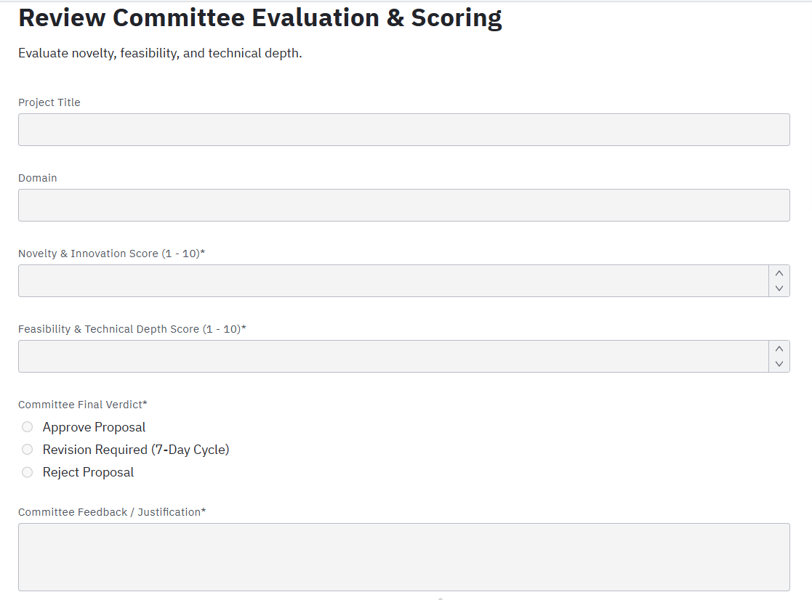
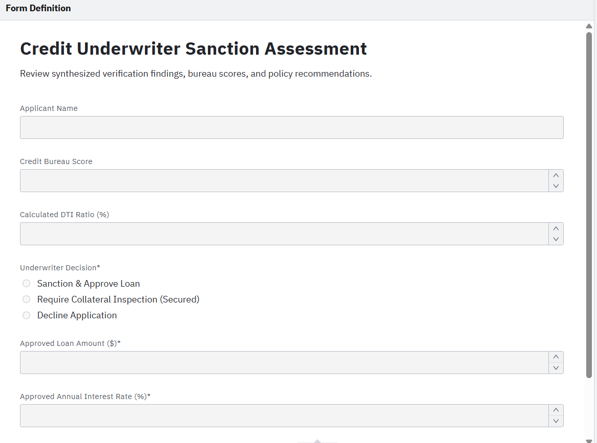

Student Proposal Submission Form (student_proposal_form.form)

Review Committee Scoring Form (committee_evaluation_form.form)


How the Brain Decides Automatically
Instead of coordinators manually picking professors, the Camunda DMN engine automatically evaluates 3 input conditions and assigns the best faculty member in milliseconds.
Rule Breakdown (When → Then)
Rule 1
AI / Machine Learning + Quota < 3 + Professor Rank → Assigns
GUIDE_AI_SR_01 (Match: 95%).
Rule 2
AI / Machine Learning + Quota < 2 + Assistant Professor → Assigns
GUIDE_AI_JR_02 (Match: 88%).
Rule 3
Cloud / Cybersecurity / Blockchain + Quota < 3 → Assigns
GUIDE_SYS_03 (Match: 90%).
Rule 4
Web Apps / IoT / Embedded + Quota < 3 → Assigns
GUIDE_APP_04 (Match: 85%).
Rule 5 (Fallback)
Any Domain + Quota ≥ 3 → Returns
CAPACITY_FULL → Triggers manual coordinator allocation.
1. Student / Team
Submits proposal, fixes validation defects, updates revisions, and handles withdrawal.
2. System Engine
Validates team rules, calculates plagiarism score, runs DMN guide table, and logs master records.
3. Coordinator
Prerequisite screening, duplicate topic review, late submissions, and manual guide fallback.
4. Committee
Panel rubric scoring, revision requests, rejection verdicts, and 7-day HoD escalation.
5. Faculty Guide
Mentorship invitation review, accept/decline decisions within allocation sub-process.

Flow Explanation from Diagram
Process begins at Team Decides to Submit Proposal. The student fills the submission form. A system Service Task verifies team constraints (size 2-4 and unique student IDs). If fields are incomplete, a loop allows the team to correct them. If valid, the Coordinator conducts scope screening.
Task Types Used
User Task
Submit Project Proposal: Student team submission.
Service Task
Validate Form & Team Rules (F1, F2): Automated rule check.
User Task
Resolve Validation Defect (F1): Form correction task.
User Task
Screen Proposal Scope & Eligibility: Coordinator review.
Gateways & Boundary Events
XOR Gateway
Validation Result?: Valid vs. Incomplete vs. Retries Exceeded.
XOR Gateway
Retry Count < 2? (F1): Limits student retry cycles to max 2.
Boundary Timer
14-Day Deadline (F4): Routes late submissions to coordinator review.
Boundary Error
System/DB Error (F10): Triggers retry and fallback logger.
Critical & Alternate Paths
Happy Path: Valid team → Passes checks → Coordinator approves → Moves to Plagiarism Scan.
Critical Alternate (F1): Defect retry loop (max 2 attempts allowed).
Fatal Exception (F2): Invalid team composition → Error End Event.

Flow Explanation from Diagram
Service task checks topic similarity. If > 30%, coordinator reviews for duplicate flags. Clean proposals move to the Review Committee. If panel takes > 3 days, a reminder triggers. If > 7 days, an interrupting timer shifts authority directly to the Head of Department (HoD).
Task Types Used
Service Task
Check Duplicate & Plagiarism (F3): Computes similarity.
User Task
Review Plagiarism Report (F3): Coordinator review of overlap.
User Task
Evaluate Proposal (Committee): Panel rubric scoring.
User Task
HoD Emergency Review (F7): Executive signoff if panel stalls.
Gateways & Boundary Events
XOR Gateway
Similarity > 30%?: Routes high match to coordinator.
XOR Gateway
Committee Verdict?: Approved vs. Revise (F5) vs. Reject (F6).
Boundary Timer
3-Day SLA Warning: Non-interrupting panel reminder alert.
Boundary Timer
7-Day SLA Breached: Interrupting escalation to HoD.
Critical & Alternate Paths
Happy Path: Low similarity → Panel Approves → Advances to Guide Allocation.
Critical Alternate (F5): Revision cycle: 7-day student update (max 2 cycles).
Rejection Path (F6): 1 resubmission allowed; repeated failure hard-rejects.

Flow Explanation from Diagram
Approved project enters guide allocation sub-process. Business rule task evaluates DMN table. Guide has 3 days to accept. If declined or timed out, system invites alternate faculty (up to 3 times) before falling back to manual coordinator assignment. Student withdrawal triggers compensation to release quota.
Task Types Used
Business Rule Task
Evaluate Guide Match (F8): Executes DMN table.
Send Task
Send Allocation Request: Dispatches invitation email.
User Task
Accept/Decline (F9): Faculty guide response.
User Task
Coordinator Manual Allocation (F8): Fallback assignment.
Gateways & Boundary Events
XOR Gateway
Guide Available?: Match found vs. Manual allocation.
XOR Gateway
Guide Attempts < 3?: Bounded automated reassignment.
Boundary Timer
3-Day Guide Timeout (F9): Auto-escalates unacknowledged invites.
Compensation Throw
Compensate Guide Quota (F11): Restores quota on student withdrawal.
Critical & Alternate Paths
Happy Path: Top guide matched → Accepts in 24h → Recorded → Final Confirmed.
Critical Alternate (F8/F9): Guide declines or times out → Next guide invited (max 3).
Withdrawal Rollback (F11): Student withdrawal → Compensation releases faculty quota.
Loan Application Intake Form (loan_application_form.form)

Credit Underwriter Assessment Form (underwriter_form.form)


How the Credit Engine Decides
Camunda evaluates Credit Score (CIBIL), Debt-to-Income (DTI), and Loan Quantum in real-time to assign risk grade and determine whether human intervention is needed.
Rule Breakdown (When → Then)
Rule 1: Tier A Prime
Credit Score ≥ 750 + DTI ≤ 40% + Loan ≤ $50k → Auto-Approve (Rate: 8.5%).
Rule 2: Tier B Near-Prime
Credit Score 680–749 + DTI ≤ 45% → Underwriter Review (Rate: 10.2%).
Rule 3: High DTI Counter
Credit Score ≥ 700 + DTI > 45% → Counter-Offer (Reduced principal or guarantor required).
Rule 4: High Value
Loan Amount > $100k → Senior Credit Committee dual authorization.
Rule 5: Sub-Prime Decline
Credit Score < 650 or DTI > 60% → Immediate Decline.

1. Applicant Pool
Submits application, uploads missing documents, reviews counter-offers, completes e-sign.
2. Loan Officer
Missing document intake, salary analysis, manual KYC review, counter-offer formulation.
3. Core Engine
4-way parallel API calls, DMN risk scoring, sanction generation, CBS transaction execution.
4. Underwriting
Discretionary underwriting, Senior Committee review (>$100k), collateral title valuation.
5. Compliance & Ops
AML watchlist screening, fraud investigation kill switch, and payment gateway hold queue.

Flow Explanation from Diagram
Applicant submits application. DMN checks document completeness. Once valid, a Parallel Gateway Split branches into 4 simultaneous tracks: e-KYC, Credit Bureau pull, AML watchlist screening, and Income assessment. A Parallel Join Gateway ensures all 4 complete before underwriting.
Task Types Used
Business Rule Task
Check Document Completeness (L1): Checks required docs.
Service Tasks
Automated KYC, Bureau Pull & AML: Simultaneous REST calls.
User Task
Verify Income & Employer (L6): Loan officer income audit.
User Task
Manual KYC & Bio Review (L2): Video-KYC officer fallback.
Gateways & Boundary Events
Parallel Gateways
Fork Streams & Synchronize Join: Concurrency barrier.
Boundary Timer
7-Day Window Lapsed (L1): Auto-lapses stale submissions.
Boundary Error
Bureau Timeout (L4): Catches 504 errors & retries up to 3 times.
Terminate End
AML Sanctions Hit (L3): Instantly kills all concurrent tokens.
Critical & Alternate Paths
Happy Path: Docs complete → All 4 checks pass in <45s → Enters DMN Scoring.
Critical Alternate (L2): Biometric mismatch → Routes to Manual KYC officer.
Sanctions Kill Switch (L3): Watchlist match instantly halts process and freezes file.

Flow Explanation from Diagram
DMN engine evaluates CIBIL (≥750) and DTI (≤40%). Results branch into: Auto-Approve, Counter-Offer (for high DTI), Borderline Referral to underwriter, or Outright Decline. For secured loans, collateral inspection confirms clear title and LTV ≤ 80%.
Task Types Used
Business Rule Task
DMN Risk Tier Calculation (L5, L6, L7): Evaluates credit matrix.
User Task
Formulate Counter-Offer (L5): Prepares adjusted loan terms.
User Task
Credit Underwriter Review: Discretionary underwriting.
User Task
Senior Committee Deliberation (L7): Dual-signoff for >$100k.
Gateways & Boundary Events
XOR Gateway
Credit Policy Route?: Approved vs. High DTI vs. Borderline vs. Reject.
XOR Gateway
Counter-Offer Accepted?: Applicant acceptance check.
XOR Gateway
Title & LTV Acceptable? (L8): Valuation clearance check.
Boundary Timer
48h Committee SLA (L7): Escalates overdue files to CRO.
Critical & Alternate Paths
Happy Path: Tier A risk score → Auto-sanction → Generates Sanction Letter.
Critical Alternate (L5/L6): High DTI triggers counter-offer (max 1 negotiation loop).
High-Value Branch (L7): Loans >$100k escalate to Senior Credit Committee.

Flow Explanation from Diagram
Bank sends Sanction Letter via Send Task. Applicant has 15 days to accept, followed by 48 hours to complete biometric digital signature. On signing, the Disbursement Sub-Process triggers: penny-drop validation, CBS ledger creation, and automated NEFT transfer. Gateway errors route to Ops hold queue.
Task Types Used
Send Task
Dispatch Loan Offer: Transmits formal contract terms.
Receive Task
Receive Offer Decision (L9, L10): Awaits customer acceptance.
User Task
E-Sign Loan Agreement (L11): Aadhaar/DocuSign contract signing.
Service Tasks
Disbursement Sub-Process: Penny drop, CBS ledger, NEFT transfer.
Gateways & Boundary Events
Boundary Timer
15-Day Offer Validity (L9): Releases credit line on expiry.
Boundary Timer
48h E-Sign Timeout (L11): Cancels offer if unsigned.
Compensation Throw
Compensate Processing Fee (L10): Refunds fee on customer withdrawal.
Boundary Error
Gateway Error (L12): Catches CBS failure & routes to Ops hold.
Critical & Alternate Paths
Happy Path: Accepted in <24h → E-Signed → CBS ledger opened → NEFT credited.
Payment Gateway Hold (L12): CBS API error holds funds → Ops safely reconciles.
Withdrawal Compensation (L10): Customer cancellation triggers processing fee refund.